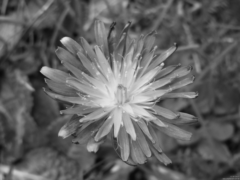
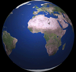

Formatos de imagen¶
Existen dos grandes tipos de formatos de imagen, los formatos de mapa de bits y los formatos vectoriales.
- Formato de imagen de mapa de bits
Las imágenes de mapa de bits, también llamadas Raster, están formadas por muchos puntos de color denominados píxeles, que conforman una fotografía o dibujo. Cuando este tipo de imagen se amplía, se pueden ver los diferentes píxeles de la imagen como elementos diferentes. Esto hace que la calidad de la imagen empeore en estos casos.
Un ejemplo de imagen de mapa de bits es las imágenes que toma una cámara fotográfica digital o un escáner.
- Formato de imagen vectorial
Las imágenes vectoriales están formadas por instrucciones que determinan la aparición de objetos tales como líneas, círculos, cuadrados o curvas de Bézier. Cuando este tipo de imagen se amplía, las líneas y curvas permanecen con la misma calidad, sin que se puedan apreciar puntos que formen la imagen.
Un ejemplo de imagen vectorial se puede encontrar en las letras TrueType de un editor de textos o de un documento PDF. Estas letras se pueden ampliar todo lo que se desee sin perder nunca su calidad.
{kind=link}
Diferencia entre una imagen de mapa de bits (Raster) y una imagen vectorial (SVG).¶
Índice de contenidos:
Esquemas de color¶
Existen dos grandes esquemas de color, el aditivo y el sustractivo. Cada uno de ellos tiene un campo de aplicación distinto y es conveniente utilizar cada uno en su ámbito, para obtener los mejores resultados.
{kind=link}
- Esquema de color aditivo RGB
Este esquema se denomina aditivo porque genera los diferentes colores añadiendo fuentes de luz. Es el esquema utilizado en los monitores, televisores proyectores o pantallas de teléfono.
Los colores primarios a partir de los que se forman todos los demás son el rojo (Red), el verde (Green) y el azul (Blue). De esos tres colores proviene el nombre RGB.
Este esquema funciona basándose en que el ojo humano tiene tres receptores de color (rojo, verde y azul) que utiliza para detectar todos los colores del arcoíris a partir de una combinación de todos ellos. Así nuestro ojo percibe el color amarillo como una combinación de luz roja más luz verde.
Los colores secundarios se forman sumando dos colores primarios:
Rojo + Verde = Amarillo
Rojo + Azul = Magenta
Verde + Azul = Cian
Rojo + Verde + Azul = Blanco
Ausencia de color = Negro
- Esquema de color sustractivo CMYK
Este esquema se denomina sustractivo porque genera los diferentes colores reflejando la luz blanca, que contiene todos los colores, menos algún color que se sustrae con una tinta. Por ejemplo, la tinta amarilla reflejará toda la luz blanca que le llega, menos el color azul, que se sustrae o absorbe en el interior de la tinta. Este es el esquema de color que se utiliza en las imprentas.
Los colores primarios a partir de los que se forman todos los demás son el cian (Cyan), el magenta (Magent), el amarillo (Yellow) y el color negro (Key). Si las tintas fuesen perfectas, podrían conseguir el color negro sumando todas ellas (CMY) pero en la práctica resulta más sencillo y se ve más oscuro al utilizar una tinta específica para conseguir el color negro.
Los colores secundarios se obtienen mezclando tintas y por lo tanto absorbiendo más de un color. De los tres colores que tiene la luz blanca (rojo, verde y azul) la tinta amarilla absorbe azul, la tinta cian absorbe rojo y la tinta magenta absorbe el verde. Al mezclar tintas amarilla y cian, se absorben el azul y el rojo, quedando solo el color verde como resultado final.
Este esquema se utiliza para la impresión de revistas, libros, folletos, carteles y todo tipo de trabajos de imprenta. También es la base de las impresoras a color y de las pinturas al óleo, acuarelas, ceras, etc.
Los colores secundarios se forman sumando dos colores primarios:
Cian + Magenta = Azul
Cian + Amarillo = Verde
Magenta + Amarillo = Rojo
Cian + Magenta + Amarillo = Negro
Ausencia de color = Blanco
Profundidad de color¶
La profundidad de color se refiere al número de colores distintos que puede mostrar una imagen. La menor profundidad de color es la de una imagen que solo trabaja con 2 colores (blanco y negro).
La profundidad de color en las imágenes JPEG estándar de cámara fotográfica es de 8 bits (256 niveles) para cada uno de los tres tonos RGB, con un resultado total de 24 bits ó 16 millones de colores distintos.
Por último las cámaras profesionales pueden tomar imágenes de tipo RAW con hasta 14 bits (16384 niveles) para cada uno de los tres tonos RGB, con un resultado total de 42 bits ó 4 billones de colores distintos. En la práctica esta profundidad de color no se puede representar en papel ni nosotros somos capaces de apreciarla, pero permite trabajar con la imagen para editarla o 'revelarla' como nos convenga sin pérdidas de calidad.
- Profundidad de color de 1 bit
2 colores.
Esta profundidad de color se utiliza para enviar fax, almacenar texto o dibujos sencillos. La ventaja que presenta es que ocupa muy poco espacio.

- Profundidad de color de 4 bits
16 colores.
Es una profundidad de color demasiado baja y presenta errores evidentes en la imagen, pero se puede utilizar en escaneado de documentos para representar color con un tamaño total más reducido.
- Profundidad de color de 8 bits gris
256 tonos de gris.
No tiene apenas pérdida de calidad en los tonos, pero no permite representar color.
- Profundidad de color de 8 bits
256 colores.
Este es el estándar de las imágenes con formato GIF. Permite representar suficientes colores como para que no se aprecie demasiada pérdida de calidad, con la ventaja de permitir reducir el tamaño de la imagen con respecto al color verdadero (True color).

- Profundidad de color de 24 bits
16 millones de colores (256 tonos de rojo, 256 de verde y 256 de azul).
También llamado color verdadero o True Color. Este es el estándar de las imágenes con formato JPEG. Tiene una calidad suficiente como para almacenar fotografías, pero no tiene tanta calidad como para realizar operaciones de edición de imágenes sin peligro de perder precisión.

- Profundidad de color de 36 a 48 bits
14 bits por cada tono RGB = 42 bits ó 4 billones de colores.
Los esquemas con mayor número de colores que el de 8 bits por cada tono RGB no presentan diferencias apreciables para el ojo humano.
Cuando una imagen tiene más de 8 bits por tono RGB se pueden realizar operaciones de edición de imágenes con menos pérdida de calidad que en las imágenes con menos colores, que no son apropiadas para las operaciones de edición.
Formatos de mapa de bits¶
Los siguientes formatos de imágenes de mapa de bits están compuestos por píxeles o puntos de la imagen que se almacenan uno a uno en el archivo hasta completar la imagen.
- JPEG (JPG)
El formato JPEG (Joint Photographic Experts Group), creado en 1992, es un formato de archivo de imagen que se utiliza para almacenar fotografías en un formato comprimido. Este formato de archivo tiene pérdidas (es lossy), lo que significa que se pierde cierta cantidad de información de la imagen al comprimirla para que ocupe menos espacio, especialmente en los pequeños detalles, generando un ruido llamado artefactos. Por esa razón este formato no es una buena opción para guardar imágenes de dibujos, texto, gráficas, etc.
Fotografía almacenada en formato JPEG.¶
El formato de archivo JPEG se puede utilizar para almacenar imágenes en varios formatos de color, incluyendo RGB de 8 bits por color, CMYK y YCbCr. La profundidad de color de este formato (8 bits por cada tono RGB) es reducida y por lo tanto no es una buena opción para editar fotografías. Para esa tarea es mucho mejor utilizar los formatos RAW de cada cámara fotográfica que llegan a tener 36 ó 42 bits por pixel.
El formato JPEG no permite definir transparencias en la imagen por lo que tampoco es una buena opción para insertar imágenes recortadas. Para esa tarea es mejor utilizar un formato que permita transparencias, como el PNG.
- PNG
El formato PNG (Portable Network Graphics) fue creado en 1995 como un formato de imagen con compresión y sin pérdidas, es decir, que no pierde ningún detalle durante la compresión de la imagen.
El formato PNG es ideal para almacenar imágenes de dibujos o texto ya que, al no tener pérdidas, se almacenarán sin ruido o "artefactos".
Imagen PNG de una cuadrícula coloreada.¶
Este formato también es ideal para imágenes que utilicen transparencias, ya que cada píxel puede ser almacenado junto a un código de color transparente que evita que se noten los bordes.
Si bien se puede utilizar para guardar fotografías, no es aconsejable porque, al no tener pérdidas, su tamaño es mucho mayor que el de las imágenes JPEG. Si lo que se desea es guardar una fotografía sin pérdidas para poder editarla, es preferible utilizar el formato TIFF.
El formato PNG puede guardar las imágenes con diversas profundidades de color adaptadas a cada aplicación. Con los colores blanco y negro (1 bit por pixel) se pueden almacenar imágenes de texto o similares con un nivel de compresión muy alto. También se pueden almacenar imágenes en escala de grises o imágenes con color verdadero (RGB de 8 bits por color).
El formato PNG no permite almacenar colores CMYK adaptados a la impresión en papel.
- GIF
El formato GIF (Graphics Format Interchange) fue lanzado en 1987 por CompuServe y es ampliamente utilizado en Internet tanto en imágenes como en animaciones debido a su amplio soporte y compatibilidad.
Como característica especial, este es el único formato popular que puede guardar imágenes en movimiento o animaciones. Los vídeos con imágenes fotográficas aparecen con una gran pérdida de color debido a que este formato solo puede manejar una paleta de 256 colores, no obstante esto no ha impedido que sea muy utilizado.
El formato GIF permite guardar dibujos con transparencias, pero con peor calidad que con el formato PNG de 24 bits.
La aplicación principal del formato GIF es almacenar pequeños dibujos y animaciones con o sin transparencia.
Zaqwerdx, CC BY-SA 3.0, via Wikimedia Commons.¶
- TIFF
El formato TIFF (Tagged Image File Format) se publicó en su versión 6 en 1992 y tiene un gran uso en la industria gráfica y en la fotografía profesional por su versatilidad y compresión sin pérdidas.
Es un formato que ocupa mucha memoria cuando almacena fotografías sin pérdidas, especialmente si se utiliza una gran profundidad de color, con 16 bits por cada tono de color RGB. Sin embargo, estas características hacen que el formato TIFF sea muy apreciado en edición fotográfica profesional y fotografía científica.
- RAW
El formato RAW es un conjunto de formatos que utilizan las cámaras fotográficas profesionales y de alta gama para guardar las imágenes tal y como han sido captadas por el sensor de la cámara. Tienen una gran profundidad de color (de 36 a 48 bits por pixel) y se almacenan sin pérdidas, por lo que cada fichero ocupa un gran tamaño comparado con la imagen equivalente en formato JPEG.
Este formato permite procesar o 'revelar' una imagen para que tenga más o menos luminosidad o más o menos rango dinámico, sin que se pierda calidad en el resultado final.
El inconveniente que presenta este formato es la falta de estandarización, por lo que cada fabricante utiliza su propia versión del formato, lo que puede producir incompatibilidades o que alguna versión del formato RAW no se pueda usar en el futuro.
- Resumen de los formatos de imagen de mapa de bits.
Formato Compresión Pérdidas Color Transparencias Movimiento JPG Si Si RGB 8 bits por tono
CMYK
No No PNG Si No 256 colores
RGB 8 bits por tono
RGB + Transparencia
Si No GIF Si No Solo 256 Colores Si Si TIFF Si No RGB de 8 bits por tono
CMYK
No No RAW No No RGB de 12 a 16 bits por tono No No Formato Tipo de imagen JPG Fotografías. PNG Dibujos. GIF Dibujos.
Imagenes con movimiento.
TIFF Fotografía profesional.
Fotografía científica.
Impresión en papel.
RAW Fotografía profesional.
Comparativa entre formatos JPEG y PNG¶
En las siguientes imágenes podemos comprobar las diferencias y la utilidad de cada uno de los formatos de imagen.
A la hora de guardar textos o imágenes de dibujo, siempre será mejor utilizar el formato PNG que ocupará menos tamaño dando mejor calidad.
Archivo de imagen PNG de 6kb de tamaño, sin errores.¶
Archivo de imagen JPEG de 7kb de tamaño, con "artefactos".¶
Archivo de imagen PNG de 210 bytes de tamaño, sin errores.¶

Archivo de imagen JPEG de 11284 bytes de tamaño, con "artefactos".¶

A la hora de guardar fotografías, siempre será mejor utilizar el formato JPEG que ocupará menos tamaño dando una calidad semejante. En realidad la calidad del formato JPEG será menor, pero no se apreciará a simple vista.
Archivo de imagen PNG de 262kb de tamaño.¶
Archivo de imagen JPEG de 52kb de tamaño.¶
Formatos vectoriales¶
Los formatos de imágenes vectoriales están compuestos por vectores, que son instrucciones matemáticas que se le dan al navegador o a programas de edición de estos gráficos para que se puedan visualizar. Estas imágenes se pueden escalar de manera infinita sin perder resolución o calidad.
- SVG
El formato SVG (Scalable Vector Graphics) es un estándar abierto publicado por el consorcio W3C en 1999 para distribuir imágenes en la web. Este formato permite definir imágenes vectoriales en dos dimensiones.
Las imágenes SVG pueden manipularse con JavaScript, que es un lenguaje de programación, para crear animaciones interactivas en los navegadores web.

Stephen Winsor, GNU General Public License v3, via Wikimedia Commons.¶
El estándar PDF (Portable Document Format) es un formato de almacenamiento de documentos digitales diseñado por Adobe para que se pueda visualizar e imprimir fácilmente en cualquier dispositivo.
PDF es un formato estandarizado y abierto a que cualquiera lo utilice libremente.
Los documentos guardados en formato PDF pueden contener texto, hipervínculos, gráficas, dibujos, fotografías y hasta vídeo.
Este formato tiene la gran ventaja de mantener inalterada la composición de página (márgenes, tamaños de letra, posición de las imágenes, etc.) y de ser un formato ampliamente compatible y estándar para almacenar documentos a largo plazo.
Como desventaja, el formato PDF se puede editar con dificultad, por lo que es mejor almacenar también el archivo fuente original (.docx).
- Fuentes tipográficas
Las fuentes tipográficas vectoriales son conjuntos de símbolos y letras diseñados para su uso en computadoras, tanto para visualizar texto en una pantalla como para imprimir en papel.
Al ser vectoriales son fácilmente escalables, es decir que las letras y símbolos se pueden representar en cualquier tamaño sin perder calidad.
Los formatos más utilizados para definir fuentes son los siguientes.
TrueType (TTF): Formato desarrollado por Apple y Microsoft a finales de la década de 1980. Es ampliamente compatible y muy utilizado en Windows y macOS.
PostScript (PS): Lenguaje desarrollado por Adobe para la impresión con impresoras de alta calidad. Permite definir tipos de letra, aunque tiene muchas más aplicaciones.
OpenType (OTF): Formato desarrollado por Microsoft y Adobe en 1996 para mejorar y suceder a los dos formatos anteriores.
Actualmente es un estándar abierto (Open Font Format), disponible de manera pública y gratuita.
TeX: Es un sistema de tipografía escrito por Donald E. Knuth, muy popular en el entorno académico universitario. El sistema LaTeX asociado, amplía las capacidades de TeX para composición de textos profesional.
Este sistema es software libre, por lo que cualquiera puede utilizarlo sin pagar licencia.
{kind=link}